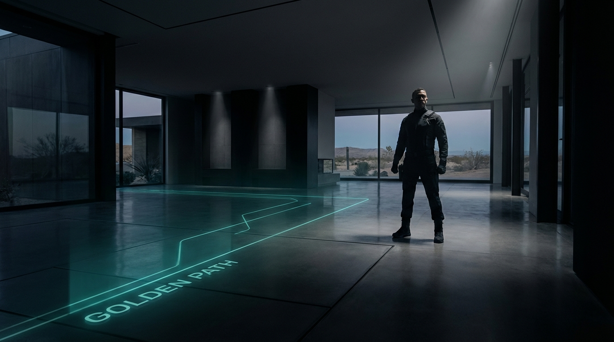
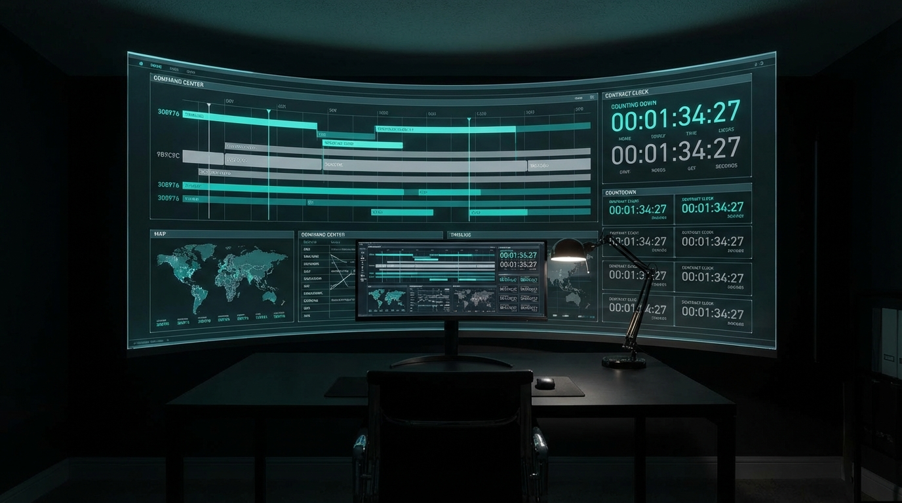

Selling your home "For Sale By Owner" in Texas isn't just a financial decision; it’s an act of defiance. You’ve spent years paying down a mortgage, fixing leaks, and building a life. That equity is your child’s college fund, your retirement, or your next leap forward.
But the industry is betting on you to fail. They want you to feel the "Paperwork Paralysis." They want you to miss one Texas-sized deadline so they can tell you, "See? You should have paid us the 6%."
The Golden Path isn't a map; it’s your shield. It’s a tactical sequence designed to turn "What if I mess up?" into "I am in total control." You aren't just selling a house; you are executing a high-stakes transaction with the ice-cold precision of a pro.
In Texas, an uneducated buyer is a dangerous buyer. If you aren't transparent, you’re vulnerable. We don't just "prepare a packet"; we build a Fortress of Disclosure.
By handing a buyer the "Essential Trio" (SDN, Survey, HOA) before they even ask, you strip them of their ability to negotiate from a place of "surprise." You are signaling that you aren't a "hobbyist" seller they can bully—you are a Professional Seller who knows exactly what their dirt is worth.

There is a moment in every deal where the air gets thin: The Executed Date. In the traditional world, agents use this date to keep you in the dark. On the Golden Path, you Weaponize the Clock.
The moment that last signature is communicated, the "Contract Clock" wakes up. It is a relentless, automatic countdown. By logging this date into the system, you aren't just "tracking time"—you are seizing the high ground. You see the traps before they trip.
The Option Period is the "Kill Zone" for FSBO deals. It’s the few days where a buyer can walk away for the price of a nice dinner, leaving you with a "Stale" listing and a bruised ego.
This is your Command Center. You aren't just waiting for an inspection; you are managing risk. You watch the "Option Fee" delivery like a hawk. If that fee isn't in your hand within 72 hours, the buyer’s "unrestricted right to cancel" is dead. The Golden Path ensures you hold the leverage, not the lender.
The bank’s appraiser is the final judge. This is where the "Waiting Game" turns into a "Nerve Game." While the buyer's bank scrutinizes your home’s value, the Golden Path keeps you tethered to reality. We monitor the "Clear to Close" milestones so you aren't wondering if the money is coming—you’re watching it move toward the vault.
The Title Company is the "Neutral Ground," but even here, there are predators. Wire fraud and "Title Clouds" can evaporate a deal in hours. The Golden Path provides the Safety Bridge. You will audit the Title Commitment and verify wire instructions via voice, not email. We don't hope for a clean closing; we audit the record to ensure it.
Closing day isn't just about the check—it’s about Finality.
When you cross the Finish Line on the Golden Path, you don't just walk away with your equity intact (and that 6% commission in your pocket). You walk away with a Permanent Audit Trail.
Six months from now, if a buyer has a question, you won't be digging through a junk drawer. You’ll point to your professional, time-stamped archive. You didn't just sell a house; you mastered the system.
Welcome to the Golden Path.
Your equity stays where it belongs: With you.